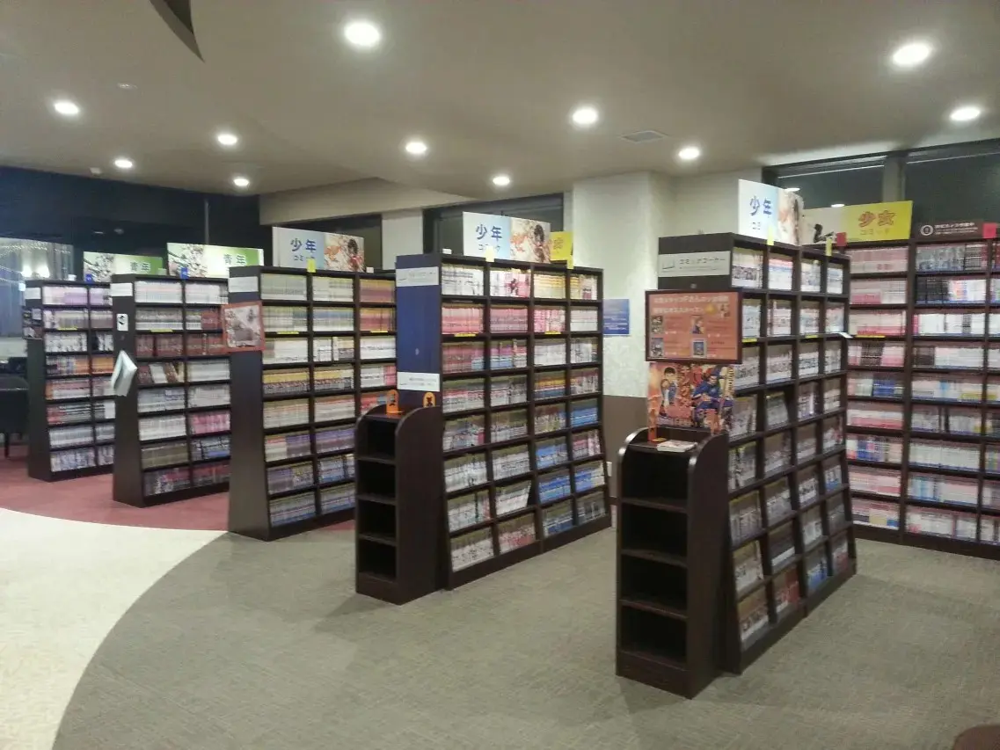
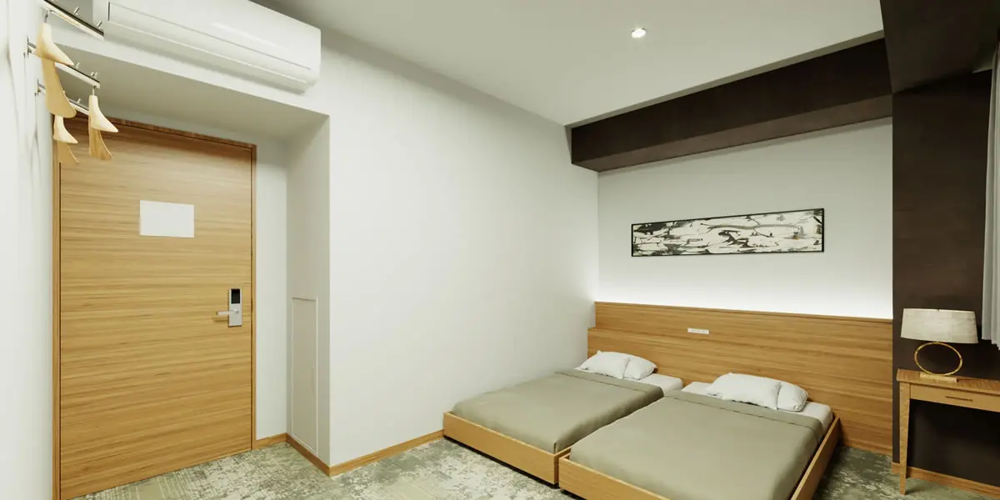
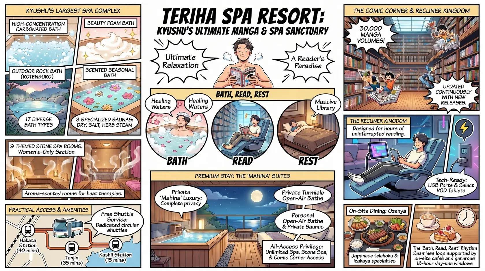
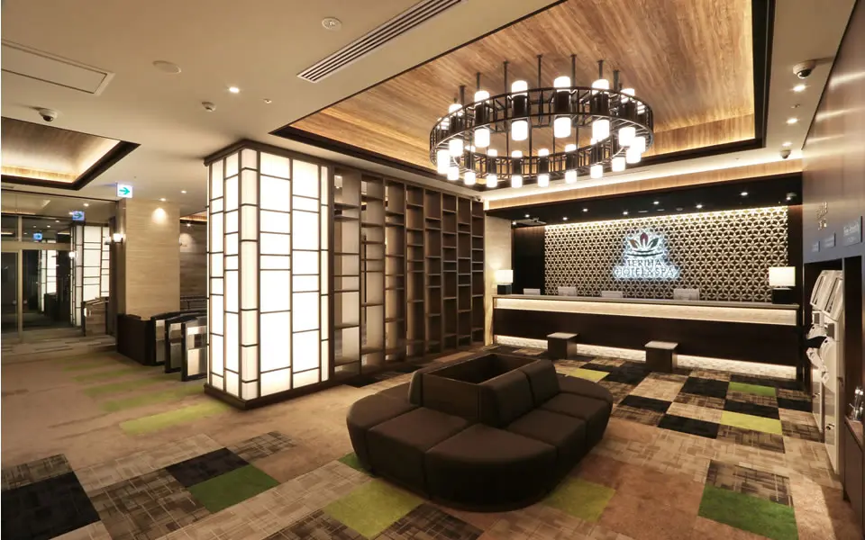
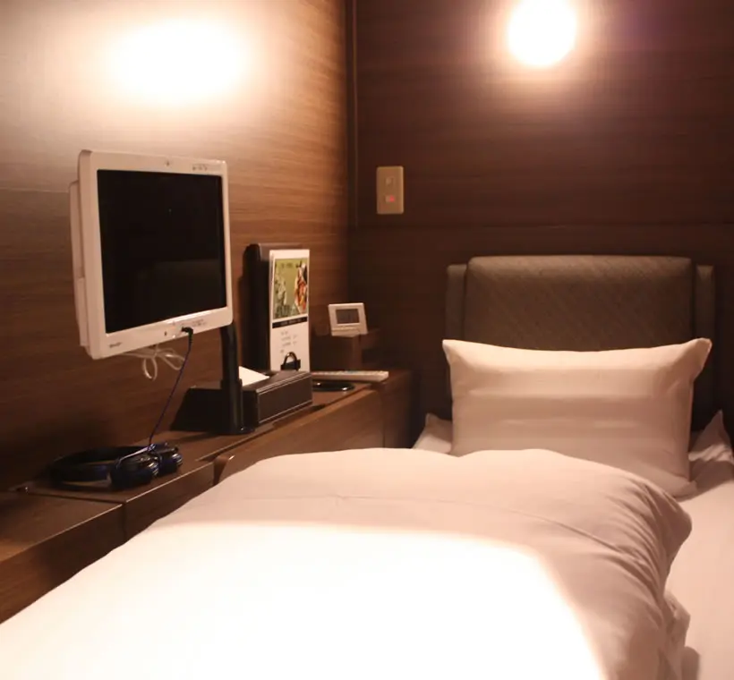
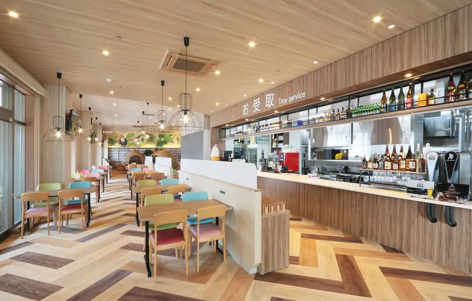
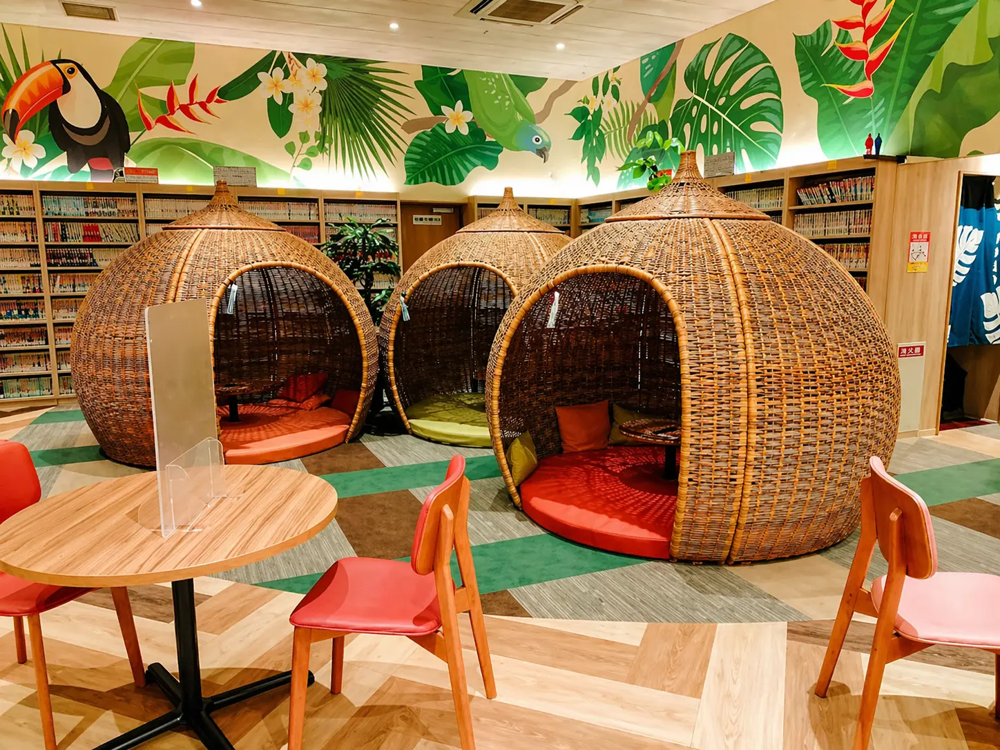
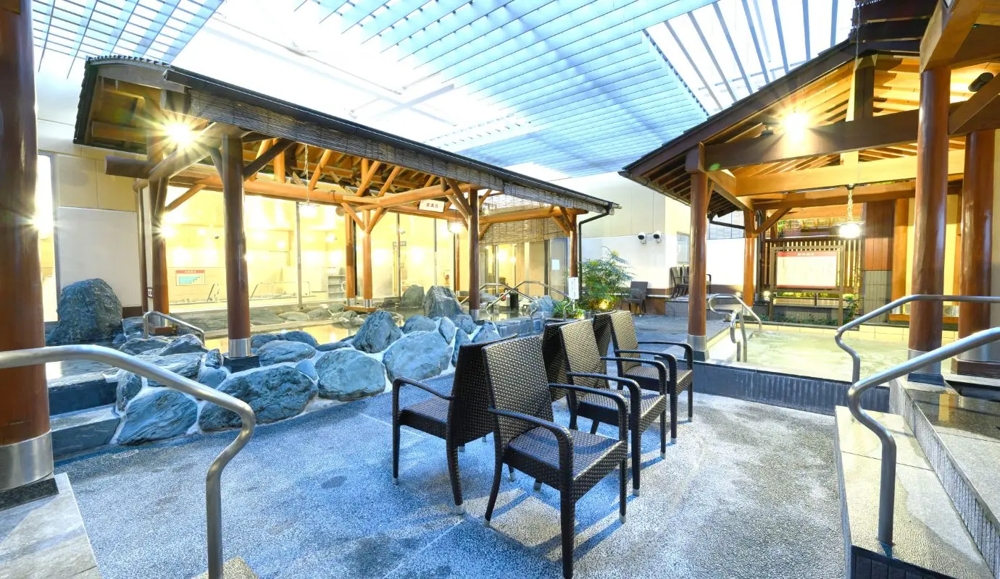
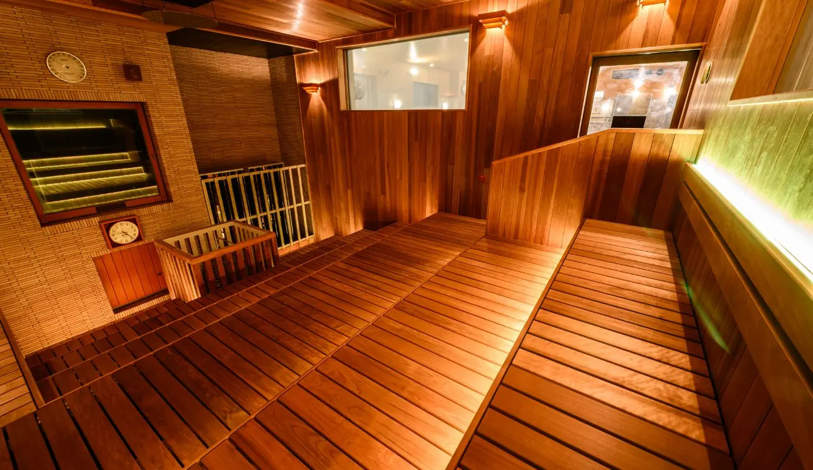

There is a particular quality to the realization that you have been inside Teriha Spa Resort for six hours and have not yet run out of things to do. You started in the high-temperature stone spa on the third floor, moved to the outdoor rock bath when your body wanted air, ordered lunch at the 御膳屋 dining room on the second floor, and settled into a recliner chair with a manga volume — one of approximately 30,000 in the Comic Corner, organized by genre along shelves that seem to go on longer than the building from the outside should allow. You have used perhaps a third of the facility. The hotel annex, which you checked into last night and will check out of tomorrow, sits adjacent. This is not a hotel that happens to have a spa. This is Kyushu's largest spa complex that happens to also have a hotel, and the distinction is what makes it one of the most unusual stays in Fukuoka.
History: A Decade on Fukuoka's Newest Island
Teriha Spa Resort opened its main branch (本店) in 2015 inside Teriha Garden Square on Fukuoka Island City (アイランドシティ) — a large-scale reclamation project in Higashi Ward that has been transforming a former bay area into a mixed-use residential, commercial, and recreational district since the early 2000s. The facility celebrated its 10th anniversary in 2025, marking the occasion with a significant renovation of its large-bath area and sauna infrastructure, carried out in phases beginning with a reopening on November 21, 2025. A second branch, the Moji Store (門司店) overlooking the Kanmon Strait in Kitakyushu, opened in December 2019, and the annex hotel building at the Fukuoka main store was completed and operational between 2020 and 2021 — expanding what had been a day-use spa facility into a full overnight destination.
The facility is operated under the Nakashiro Group, which also runs the Raku no Yu chain of onsen complexes in Aichi Prefecture (Komaki, Okazaki, and Midori locations). Teriha Spa Resort is the flagship property of the group and, by the metric of bath variety and stone spa floor area, stands as one of the largest integrated hot-spring recreation complexes in Japan. The surrounding Island City neighborhood has grown considerably since the facility opened, with the Teriha Garden Square commercial development anchoring a zone that now includes major retailers, restaurants, the Teriha Sekisui House Arena (a large indoor arena), and residential blocks. The free shuttle bus from Hakata, Tenjin, and Kashii stations that the facility operates has become a fixture of the neighborhood's transport ecosystem, making the otherwise somewhat transit-inaccessible Island City location manageable for visitors arriving from central Fukuoka.
The Comic Corner: 30,000 Volumes in a Recliner Kingdom
The defining manga credential of Teriha Spa Resort is its Comic Corner (コミックコーナー) — a reading and resting area on the third floor holding approximately 30,000 manga volumes and magazines, covering genres from children's works through shōnen, shōjo, seinen, and specialist titles, updated continuously with new arrivals. The figure is not a marketing approximation: multiple independent sources, the facility's own materials, and review platforms consistently report this number, and it represents a collection roughly four times the size of the Quintessa Hotel Fukuoka Tenjin's 8,000-volume library — a property already considered a reference Manga Sleepover destination in HotelManga's coverage. By volume count, the Teriha Comic Corner is among the largest manga reading collections attached to any accommodation or leisure facility in Kyushu.

The reading area is not a shelf-lined room where you stand and pull volumes. It is a recliner zone — a large space with reclining chairs set up for horizontal or semi-horizontal reading, each seat equipped with a USB charging port, some with individual tablet screens offering VOD content and internet access. Blankets are available. The combination of deep recliner seating, manga at arm's reach, personal device charging, and optional video content creates a hybrid between a manga café and a relaxation lounge: you do not so much choose a book and find a seat as arrive at the recliner floor and decide how you want to spend the next several hours. A women's-only lounge section offers the same facilities without the mixed-gender dynamic of the main floor. The Rakuten Travel review from a guest who specifically mentioned reading manga between bath sessions as the organizing structure of her visit captures the intended rhythm accurately: bath, recline, read, eat, bath again.
Because the Comic Corner is included in the Spa Resort Course — the facility's premium day-use and overnight ticket — access to the manga collection is effectively built into the stay at no additional charge for hotel guests. Day-use visitors on the Spa Course (bath only) do not automatically have access to the stone spa floors and their amenities, including the Comic Corner; the upgraded Spa Resort Course is the correct ticket for manga readers. Guests who check into the hotel annex have full access to all spa areas throughout their stay, making the overnight option the cleanest way to experience the facility for visitors who want both the bath and the reading time without watching the clock on a day-use limit.
The Spa: Seventeen Baths, Three Saunas, Nine Stone Rooms
The bath and sauna infrastructure at Teriha Spa Resort is the facility's primary identity — the manga collection is an enormous bonus, but the bathing offering is what originally established its reputation as Kyushu's leading urban spa resort. Following the 2025 renovation, the facility operates 17 types of baths divided between indoor and outdoor areas, three sauna types, and nine distinct stone spa rooms across two floors. The outdoor bath area is built around a rock garden (岩風呂) with wooden pavilion architecture and abundant greenery — large enough that even on busy weekends it rarely feels crowded, and covered with individual roofing over each bath type so that outdoor bathing is viable in all weather. The 2025 renovation added multiple new ととのいチェア (cooling-down chairs) for outdoor air bathing between sauna sessions.
The indoor bath lineup includes, among others: a high-concentration carbonated water bath (高濃度炭酸泉), a beauty foam bath (美泡風呂) praised for skin effects using fine bubbles with negative ion generation, a jet bath (寝湯ジェット), a ceramic pottery bath (陶器風呂), a scented seasonal bath (香り湯), an electric bath (炭酸電気風呂), and a resting bath (寝湯). The sauna section provides a high-temperature dry sauna, a salt sauna (塩サウナ — where guests apply provided salt to exfoliate before sweating it away), and a herb steam sauna. Cold plunge pools include both a standard cold-water pool and a tepid 32°C water pool — an option that was noted positively by guests who find full cold immersion uncomfortable. Private rental baths (家族風呂, literally "family baths") provide completely enclosed soaking suites for parties who prefer privacy; three such rooms are available at additional cost. The 2025 renovation also expanded the outdoor air-bathing terrace significantly and added new ととのい seating throughout the exterior area.
Island City: Fukuoka's Newest District and a Different Kind of Manga Neighborhood
Fukuoka Island City (福岡アイランドシティ) is a reclaimed land development in Higashi Ward built on an artificial island in Hakata Bay. It is neither a traditional urban neighborhood nor an otaku district in the sense of Akihabara or Nipponbashi — it is a planned community in the process of becoming a real one, with residential towers, schools, parks, a large indoor arena, retail clusters, and a gradual accumulation of the infrastructure that makes a neighborhood livable. The Teriha area within Island City, where the spa resort sits inside Teriha Garden Square, is the commercial and recreational anchor of the development. The adjacent Teriha Garden Square houses additional retail and dining options alongside the spa complex.
What Island City lacks in traditional urban density it compensates with space and access to waterfront areas unavailable in central Fukuoka. Uminonakamichi Seaside Park, one of Fukuoka's major outdoor leisure destinations, is a short drive from the facility. Marine World Uminonakamichi — a large aquarium consistently rated among Fukuoka's top attractions — is nearby and frequently mentioned in the same breath as the spa by reviewers who combine the two into a day-trip. Shikanoshima Island, accessible from the area, offers beach access in warmer months. For visitors arriving by free shuttle from Hakata or Tenjin and spending the day entirely within the resort complex, the surrounding neighborhood matters less than the facility itself — but for those staying overnight, the adjacent beach and park access is a genuine addition to the experience that central Fukuoka hotels cannot offer.
The Rooms: Hotel Annex with Five Room Types and Premium Suites

The hotel annex at Teriha Spa Resort offers five standard room types: Double (double bed, comfortable for 1–2 guests), Superior Twin (two beds, suitable for friends or couples), Loft Twin (twin configuration with a raised loft section), Family (bunk beds included for family use), and Universal (wheelchair-accessible flat-floor configuration, listed as "under preparation" in some recent materials — confirm availability when booking). In addition to the standard room types, the property introduced a premium category called マヒナ (Mahina, meaning "moon" in Hawaiian) in early 2026 — completely private rooms with individual indoor baths and open-air rotenburo (露天風呂), with select suites adding a private sauna. This premium room tier represents a significant step beyond the standard annex offering and positions the facility, for guests who book these rooms, in territory closer to a boutique ryokan experience than a budget spa hotel.
Standard room sizes are not individually specified in available materials, but review descriptions consistently characterize them as compact — sufficient for sleeping and resting, without the space to work or spread out comfortably for extended periods. The tradeoff is access: hotel guests have unrestricted use of the entire spa and stone spa complex for the duration of their stay, including the 30,000-volume comic corner, the training room, and all relaxation areas. Rakuten Travel reviewers consistently note that the room itself is not where you spend your time — the facility is. One reviewer described the rhythm precisely: "time between bath sessions spent reading manga and resting in the recliner area, with the room serving mainly for sleeping and storing luggage." At that usage pattern, the room size becomes a secondary concern. A reviewer who used the facility as a family noted that the Kids & Family Room on the fourth floor of the annex — a space where children can move and talk freely while adults rest — was a practical provision that made the visit work for younger guests in a facility otherwise oriented toward quiet.
General Facilities
Beyond the bath and manga areas, Teriha Spa Resort operates a free training room with machines accessible to all guests — an amenity that reviewers mention as an unexpected positive and one that distinguishes the facility from a standard onsen complex. The recliner area on the third floor, separate from the Comic Corner proper, provides flat-recline seating with individual tablet terminals for VOD and internet use, and smartphone charging points at every seat. A private workspace section provides desks and internet access for guests who need to work during a long-form stay — a provision that aligns with the facility's positioning as a multi-purpose destination rather than a purely relaxation-oriented venue. Coin lockers and changing facilities are sized generously for the volume of day-use and overnight visitors. The car park accommodates 397 vehicles and is free for spa facility users — a significant practical convenience for guests arriving by car from central Fukuoka or from outside the city. Payments are accepted in cash, major credit cards (Visa, JCB, Mastercard), and a range of electronic payment methods. The facility's website and entry materials are available in Japanese, English, Korean, and two forms of Chinese, reflecting the international visitor mix of a Fukuoka facility positioned near Fukuoka Airport.
Dining: Three Venues, Teishoku Sets, and Breakfast Buffet
The main dining venue at Teriha Spa Resort is 御膳屋 (Ozenya), a Japanese teishoku and izakaya-style restaurant operating within the spa complex — and available, notably, to non-spa visitors who can enter the restaurant directly without paying facility admission. The menu spans the full range of a competent casual Japanese dining room: grilled chicken thigh teppan sets, beef cube steak teppan, pork belly Korean-style, katsu sets, donburi bowls, seafood, ramen, and the house special 照葉御膳 — a multi-dish set plate that reviewers on price comparison sites describe as well-composed and fairly priced. Hours run 11:00 to 23:00 with last order at 22:00. Hotel overnight guests are provided breakfast in the Ozenya restaurant on a buffet format — described by Rakuten Travel reviewers as comfortable and varied, with warm dishes alongside salads and lighter options. A bakery café, Pain de Couleur (パン・ド・クルール), operates within the complex and provides bread, pastries, and lighter café fare — convenient for mid-session snack stops without committing to a full dining room visit. The combination of the main restaurant, breakfast inclusion for hotel guests, and the café option means that a full day and overnight stay at the facility requires no external food sourcing.
Cleanliness
Teriha Spa Resort receives consistently strong marks for cleanliness across booking platforms, with Jalan.net reviewers specifically citing bath area upkeep as a high-scoring category. The facility is a large-throughput operation — day-use visitors and overnight guests enter and exit in significant numbers — and the cleaning standards necessary to maintain such a complex are more intensive than a standard hotel. One Rakuten Travel reviewer noted a minor concern about breakfast area floor cleanliness on one morning, indicating that standards, while generally high, may vary between peak-traffic periods. The bath water itself is not natural hot spring water (源泉かけ流し) — it is heated and in the case of the carbonated bath, artificially carbonated. The facility's management addressed this point directly in a Rakuten Travel response, confirming the water source openly. For guests who prioritize natural onsen over engineered bath chemistry, this is a meaningful disclosure. For guests interested primarily in the facility experience, the variety of bath types and the quality of the stone spa rooms make the point largely academic.

Value
The value proposition at Teriha Spa Resort is unusual and requires thinking about the stay as a bundled day-rate rather than a per-room rate. The Spa Resort Course (入浴＋岩盤浴) runs approximately ¥1,880 on weekdays and ¥2,180 on weekends and holidays for adults — a price that covers up to 18 hours of access to 17 bath types, nine stone spa rooms, the 30,000-volume Comic Corner, recliner seating, and the training room. Hotel room rates for overnight stays are separate and add to this, but hotel guests gain unrestricted spa access throughout their stay, making the effective per-hour cost of the combined experience extremely competitive by Fukuoka leisure standards. The Spa Course (bath only, no stone spa or Comic Corner) is available at roughly half the Spa Resort price for guests who want baths without the upper-floor amenities. A free shuttle bus from Hakata, Tenjin, and Kashii eliminates transport cost for city-center visitors. On-site car parking for 397 vehicles is free for facility users — a genuine differentiator from central Fukuoka hotels where parking is either unavailable or expensive. The honest value caveat is location: Island City is not walking distance from central Fukuoka, and for guests who plan to spend significant time in Tenjin, Hakata, or Canal City, the shuttle bus dependency (approximately 40 minutes from Hakata) adds friction to every excursion. For guests who plan to stay largely within the resort, the value is among the strongest in Fukuoka at any price tier.
The premium Mahina room category, with private bath and outdoor rotenburo, positions the top-end offering at a price point not publicly listed in standardly available materials — these rooms opened for reservation in March 2026 and represent a new tier. Guests seeking this option should check the official hotel site directly for current rates. For standard room categories, multiple Jalan.net and Rakuten Travel reviewers describe the price-to-experience ratio as a clear positive, with spa access included making the overnight rate feel significantly more generous than a comparable city business hotel at a similar rack rate.
Practical Information
- Check-in: 15:00–24:00 Check-out: 10:00
- Day-Use Hours: 8:00–02:00 next day (reception until 01:00); Stone Spa from 09:00
- Day-Use Pricing: Spa Resort Course (bath + stone spa): ¥1,880 weekdays / ¥2,180 weekends & holidays (adult); Spa Course (bath only): ¥940 weekdays / ¥990 weekends (adult); children (age 3–school age) discounted
- Overnight Stay: Includes full spa complex access; hotel room types — Double, Superior Twin, Loft Twin, Family, Universal (confirm availability), Premium Mahina Suite (private indoor + outdoor bath, some with sauna)
- Comic Corner: ~30,000 manga volumes and magazines; all genres; recliner seating with USB charging and individual tablet screens; included in Spa Resort Course
- Baths: 17 types (indoor + outdoor); 3 sauna types (high-temp dry, salt, herb steam); cold plunge and tepid water pools; private rental baths available
- Stone Spa (岩盤房): 9 rooms across 2 floors — Kyushu's largest stone spa area; all aroma-scented; women's-only room available
- Facilities: Free training room, recliner lounge with VOD, private workspace, women's-only lounge, coin lockers, vending machines, shop
- Dining: 御膳屋 restaurant 11:00–23:00 (L.O. 22:00); Pain de Couleur bakery café; breakfast buffet for hotel guests
- Parking: 397 spaces, free for spa facility users
- Shuttle Bus: Free circular shuttle from Hakata Station, Tenjin, and Kashii Station (check timetable on official site)
- Nearest Bus Stop: 総合体育館入口 (Sōgō Taiikukan Iriguchi), Nishitetsu Bus
- Languages: Japanese, English, Korean, Simplified and Traditional Chinese (website and entry materials)
- Payments: Cash, Visa, JCB, Mastercard, electronic payment (auto-checkout machines available)
- Pets: Not permitted
- Closed: Irregular maintenance closures — check official site before visiting
Getting There
Free Shuttle Bus (Recommended)
- From Hakata Station: ~40 min, free
- From Tenjin: ~35 min, free
- From Kashii Station: ~15 min, free
- Timetable varies — check terihaspa.jp before travel
- Best option for visitors without a car
By Car
- From Tenjin: ~20 min
- From Hakata: ~20 min
- Fukuoka Urban Expressway "Island City" exit: ~1 min
- 397 free parking spaces on-site
- Car is the most flexible option outside shuttle hours
By Public Bus
- Nishitetsu Bus to 総合体育館入口 stop
- Routes available from Kashii and Hakozaki areas
- Less frequent than shuttle — check route planner
- Subway to Kaizuka (貝塚駅) + bus: ~20 min total from Kaizuka
From Fukuoka Airport (FUK)
- Subway Airport Line to Kaizuka: ~15 min
- Bus from Kaizuka to facility: ~20 min
- Or: taxi from airport — approximately 20–25 min
- Shuttle does not stop at airport — plan connection carefully
Tips for Getting the Most Out of Your Stay
The single most important planning decision at Teriha Spa Resort is choosing the right course. Day-use visitors should book the Spa Resort Course (入浴＋岩盤浴) rather than the Spa Course if they want access to the Comic Corner and stone spa rooms — the Spa Course covers baths only, and the majority of what makes the facility distinctive sits on the upper floors behind the resort-course ticket. Overnight guests have full access automatically, but should confirm their check-in time and shuttle schedule before arrival, as the last shuttle from central Fukuoka runs on a fixed timetable. Arrive early on weekends — the stone spa rooms fill on holiday afternoons, and the private rental baths (家族風呂) are best reserved in advance or claimed early in the day. For manga reading, the recliner floor is significantly more comfortable than the lounge chairs in the bath changing area — plan your reading time on the third floor, not around the bath changing rooms. Therapies and massage treatments at the facility's relaxation service wing are popular and fill quickly; book at the reception desk upon arrival if you want a treatment slot later in the day. Guests using the premium Mahina rooms with private baths can of course use the private bath at any hour without queuing, making the premium category particularly valuable for those who want unhurried bathing on their own schedule.
Beyond the Baths: Teriha Spa Resort as a Straight-Up Hotel
Strip away the 30,000 manga volumes and the seventeen bath types and what remains is a budget-to-mid-range hotel in an outer residential district of Fukuoka with compact rooms, a decent breakfast buffet, and free parking on an artificial island about twenty minutes from the city center by car. Assessed purely as accommodation, without the spa complex, it would be a serviceable but unremarkable choice. The location works well for families visiting the nearby aquarium or the seaside park, and the free shuttle makes it usable for airport-adjacent nights when Hakata-area hotels are full or expensive — but it would not be a first-choice urban hotel on the strength of its rooms alone.
What the resort cannot be assessed without, however, is the experience it was built to deliver: a sustained, time-expanded, multi-facility day and night that treats bathing and reading and resting as equally valid activities across an eighteen-hour window. For that specific proposition — for the person who genuinely wants to spend a full day alternating between hot stone rooms and long manga sessions in a recliner chair — Teriha Spa Resort does not have a meaningful equivalent anywhere in Fukuoka. The Comic Corner alone, at 30,000 volumes, is a category-defining collection by any measure HotelManga applies to manga destinations. The spa complex is by any measure Kyushu's largest and most varied urban bathing facility. Together, they form something that sits in no clean hotel category — which is precisely why the Manga Kissa designation, usually applied to modest internet-café-style lodgings, here describes a property operating at an entirely different scale than the category name suggests.
Hotel Directory Card
Teriha Spa Resort 照葉スパリゾート 本店
Photo Gallery

Photo 1
Photo 2
Photo 3'">
Photo 4'">
Photo 5'">
Photo 6'">Thirty Thousand Volumes and Seventeen Baths Are Waiting
Hotel rooms and premium Mahina suites book up on weekends and holidays — plan ahead.